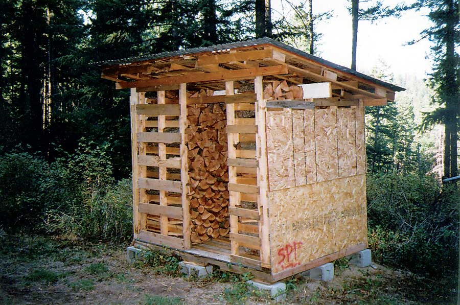

I have built two firewood seasoning/storage woodsheds from used wood pallets and sheeting I found in free wood piles at a nearby industrial park. The used corrugated roofing is from a barn that was being dismantled and moved. I caulked the old nail holes to make the roofing waterproof.
I positioned the woodsheds with their backsides facing the prevailing winds to keep the rain and snow from blowing in, while also providing maximum airflow to dry the wood.
|
 MARK JACOBSON Wood pallets can be used to construct a firewood drying and storage woodshed. |
|
|